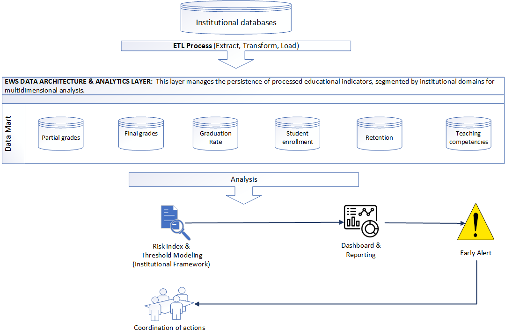

Work
Projects
Disaggregated Failure Rate Analysis: Beyond Demographics
Class failure rates were tracked institutionally, but reported as aggregate figures — masking the underlying factors driving student underperformance. The question was not just how many students were failing, but which conditions were most strongly associated with failure.
Existing reports did not disaggregate failure rates by demographic, engagement, or support dimensions, making it difficult to design targeted interventions. Funding Code was treated carefully — subcategories were aggregated to avoid overidentification of specific demographic groups while still capturing the financial dimension of student risk.
Using Python, I cross-referenced Cognos reports to build a multi-dimensional dataset spanning three indicator groups: Demographic Insights, Educational Engagement, and Background and Support. The analysis combined descriptive statistics, clustering, correlation analysis, and linear regression — with a deliberate bias reduction strategy that avoided individual identifiers and program-specific data.
The dataset was built by cross-referencing multiple Cognos reports — not a single extract. Each indicator group required separate data preparation before the dimensions could be combined for analysis. This foundation also serves as the dimensional structure for a future Power BI implementation, where each indicator group becomes a slicer enabling dynamic filtering.
The chart shows average failed classes per metric across three indicator groups — offering a balanced view among indicators, metrics, and submetrics.
In this recreation using synthetic data, the following patterns can be observed:
- Trend: Steady increase from Residency (2.39) to Funding Code (3.37) across all three groups.
- Demographics: Age Range (2.52) emerges as the most significant demographic factor.
- Engagement: Shaped primarily by Semester (2.74) and Previous Standing (2.89).
- Background & Support: Funding Code (3.37) and Catchment Area (2.95) show the highest average failure rates.

Financial circumstances, represented by Funding Code, emerged as the strongest predictor of class failure — stronger than gender, age, or residency status. This challenges assumptions that demographic identity is the primary risk factor, and points toward financial support systems as a higher-leverage intervention point.
This analytical framework applies directly to healthcare (readmission risk), HR (employee turnover), and credit risk modeling — any domain where disaggregated risk analysis can identify systemic factors behind individual outcomes.
Analysis developed independently within an institutional reporting role at a post-secondary institution in Canada. Recreated with synthetic data for portfolio purposes.
Student Retention Analysis: From Static Reports to Interactive Dashboards
Retention reports existed but were not fully actionable — visuals were static screenshots embedded in Word documents, making year-over-year comparison difficult and limiting accessibility for non-technical stakeholders. The underlying dataset added complexity: over 20,000 rows, nearly 50 columns, and unidentified transfer students that distorted program-level metrics.
The source dataset combined dimensions and calculated fields with coding conventions that evolved over time. Records could not be reliably linked back to the original cohort, and transfer students were not separately identified — making it impossible to distinguish institutional retention from program-level retention without first resolving these structural issues.
Rather than rebuilding from scratch, I first understood the existing calculation logic — how retention rates were computed, how cohorts were tracked, and critically, how institutional retention differed from program-level retention. From there, I redesigned the visualization applying churn analysis principles: the student as the equivalent of a customer, semester-to-semester retention as the equivalent of churn.
Transfer students needed to be identified and separated from the original cohort to produce meaningful program-level metrics. The redesign was iterative — each version tested against the question: can a non-technical stakeholder act on this?
An improved tabular view tracking cohort progression across semesters (Semester 1 through Semester 5) on the horizontal axis, with retention percentages on the vertical dimension, segmented by domestic (RES) and international (NRES) students. The staircase effect makes attrition patterns immediately readable — newer cohorts have fewer semesters of data, older cohorts show the full trajectory.
This format represented a significant improvement in accessibility over previous reports, though it remained static. It served as the analytical foundation for the subsequent Power BI implementation, which introduced dynamic filtering and historical benchmarking.

The same underlying data, presented with the right structure, became a tool for decision-making rather than a reporting obligation. The vertical axis represents time — each row is a cohort intake. The horizontal axis tracks semester progression. The staircase effect is intentional: newer cohorts have fewer semesters of data, while older cohorts show the full retention trajectory. Stakeholders could identify programs with declining retention, compare cohorts, and segment by domestic and international students — without requiring analytical expertise.
Currently building a Power BI implementation enabling dynamic filtering by population and campus, with institutional and program-level retention presented as separate metrics.
This analytical approach mirrors churn analysis in business intelligence — applicable to SaaS customer retention, patient follow-up in healthcare, employee retention in HR, or client persistence in financial services.
Visual recreated with synthetic data for portfolio purposes. Analysis developed independently within an institutional reporting role at a post-secondary institution in Canada.
EWS Pilot: Multilevel Contextual EWS – A Business Intelligence Approach
The proposed Early Warning System (EWS) is a next-generation Academic Analytics framework that shifts the institutional focus from individual student remediation to a relational, multilevel intelligence model. It integrates a robust BI architecture with longitudinal data analysis to identify risk not as an isolated student trait, but as a dynamic interaction between the learner, the curriculum, and the institution.
Within Ontario's higher education landscape, institutional data is often trapped in functional silos — preventing a holistic view of the factors driving student attrition. Traditional EWS implementations focus exclusively on the individual student (Micro level), treating academic risk as a learner deficiency while ignoring structural failures within specific subjects or teaching methods.
By focusing only on the Micro level, institutions naturalize systemic problems — failing to recognize when a student's struggle is a symptom of broader issues like "critical subjects" with high failure rates. They also depend on static entry data (e.g., high school GPA), which research confirms has modest predictive utility that fades quickly after the first semester.
The system uses an ETL process to consolidate data from institutional warehouses into a specialized Educational Data Mart, segmented into multidimensional domains — partial grades, enrollment trends, and teaching competencies — enabling real-time visual analytics.

Following validated international frameworks, the EWS organizes intelligence and intervention into three nested levels — Micro, Meso, and Macro — each addressing a different layer of institutional responsibility.

Tier 1 – Micro: Monitors the student's academic vital signs in real-time — Trajectory Risk (historical deviation from program median) and Contingent Risk (current semester performance). First-semester credits earned serve as the most powerful milestone predictor.
Tier 2 – Meso: Focuses on the teaching environment. Identifies critical subjects that block student progression and monitors teaching performance indicators to adjust classroom effectiveness.
Tier 3 – Macro: Analyzes global barometers — retention trends, effective graduation rates — compared against external benchmarks such as the OECD average.
The EWS operates through four structured analysis sessions across the academic year — each with a defined purpose, suggested date, and coordinated actions across academic and support teams.

This framework transforms the EWS into a tool for Educational Justice. Instead of merely identifying students who have already failed, the institution assumes responsibility for optimizing the learning environment — identifying systemic barriers before they lead to student departure.
The multilevel nested analytics approach is validated by research from the Politecnico di Milano, acknowledging that a student's probability of dropping out is highly conditional on their specific program. Additional frameworks draw on UCSC-Chile's multilevel model and Purdue University's Course Signals risk predictor research.
Independently developed proposal based on validated research. Not institutionally adopted — the initiative and design represent original analytical work developed within an institutional reporting role at a post-secondary institution in Canada.